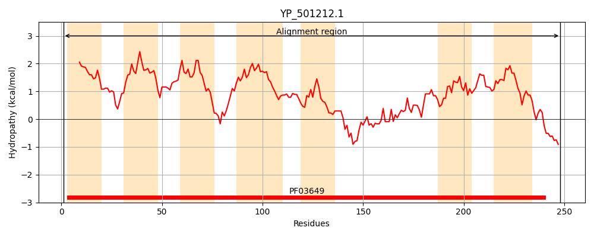
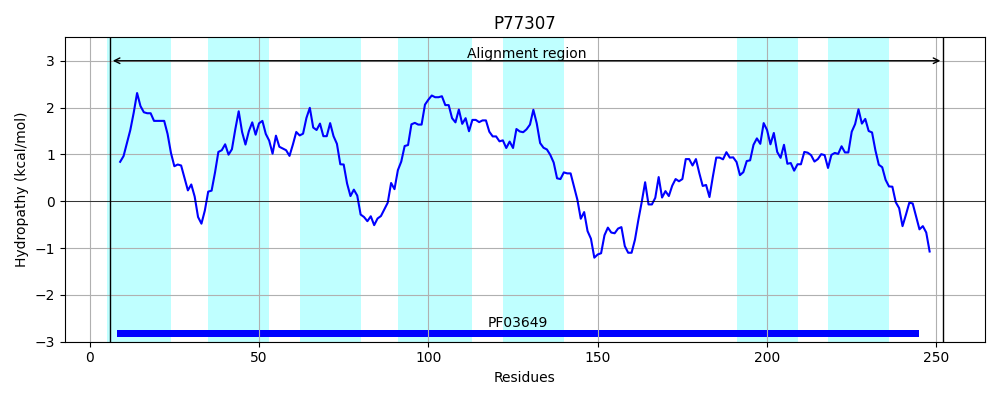
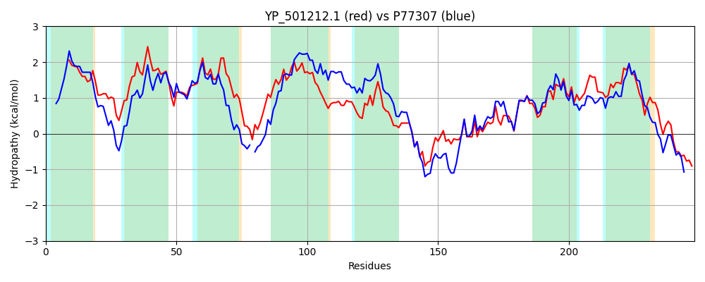

Hit Accession: P77307
Hit TCID: 3.A.1.139.2
Hit Description: gnl|BL_ORD_ID|11499 gnl|TC-DB|P77307|3.A.1.139.2 UPF0014 inner membrane protein ybbM OS=Escherichia coli (strain K12) GN=ybbM PE=1 SV=2
Mach Len: 248
e:0.000000
Query TMS Count : 7
Hit TMS Count: 7
TMS-Overlap Score: 6.300000
Predicted Substrates:CHEBI:34754;iron(2+)
BLAST Alignment:
Score: 587 , Bit scores: 230 bits, E-value: 6.9e-76, Alignment length: 248, Percentage identity: 47
Query: 1 MSNTALGLTALLLVIPIIISYKEGLHIIKDLIVATLRAVVQLIILGFLLHYIFKINDKWLLILCVLVIIINASWNTISRASPVMHHVFWISFLAIFIGTALPLAGTIATGAIQFTANEVIPIGGMLANNGLIAINLAYQNLDRAFVQDGTNIESKLSLAATPKLASKGAIRESIRLAIVPTIDSVKTYGLVSIPGMMTGLIIGGVPPLQAIKFQLLVVFIHTTATIMSALIATYLSYGQFFNARHQLV 248
++N +L L +L+V+ I+IS+KE L + KD++ + RA++QLII+G++L YIF ++D L +L VL I NA+WN R S + F SF+AI +G + LA I +G+I+F +VIPI GM+A N ++A+ L Y NL + + + I+ KLSL ATPK AS IR+SIR A++PT+DS KT GLVS+PGMM+GLI G+ P++AIK+Q++V F+ + +S +IA YL+Y +F+N+RHQLV
Sbjct: 6 ITNESLALALMLVVVAILISHKEKLALEKDILWSVGRAIIQLIIVGYVLKYIFSVDDASLTLLMVLFICFNAAWNAQKR-SKYIAKAFISSFIAITVGAGITLAVLILSGSIEFIPMQVIPIAGMIAGNAMVAVGLCYNNLGQRVISEQQQIQEKLSLGATPKQASAILIRDSIRAALIPTVDSAKTVGLVSLPGMMSGLIFAGIDPVKAIKYQIMVTFMLLSTASLSTIIACYLTYRKFYNSRHQLV 252 | Protein Hydropathy Plots: |
|---|
|  |  |
Pairwise Alignment-Hydropathy Plot:
|
|---|
|  |